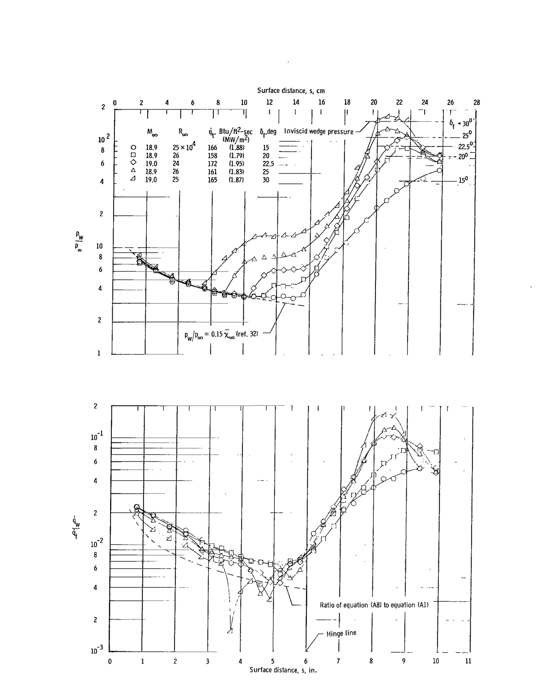
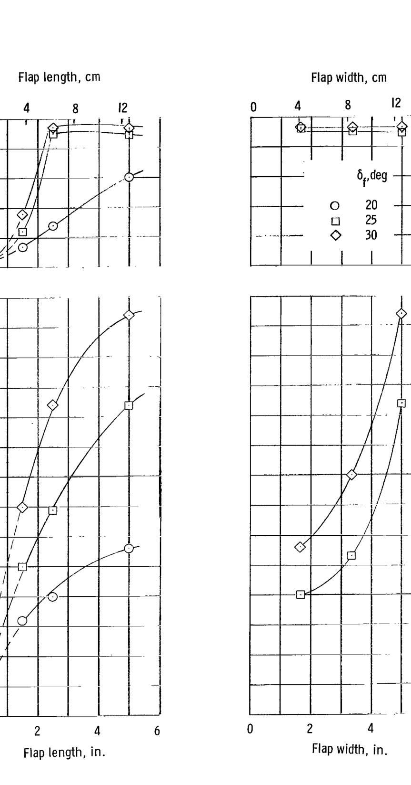
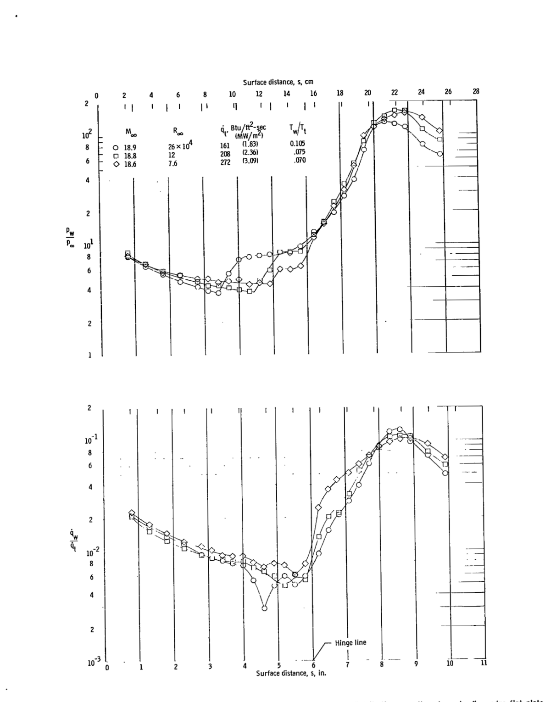
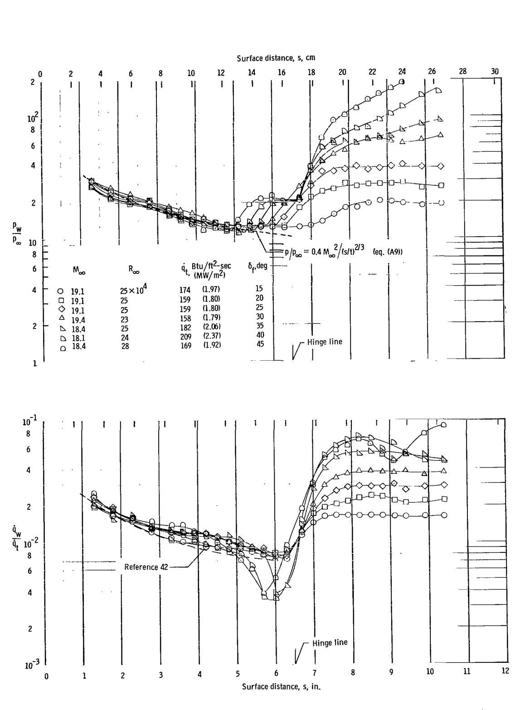

01中文摘要
在名义马赫数 19、单位长度雷诺数 7.6×10⁴–26×10⁴/ft 条件下，实验测量层流平板偏转后缘襟翼的压力与热流分布。模型几何变量包括襟翼宽度、襟翼长度和前缘钝度。结果表明，襟翼偏转增大使分离长度增大；Re 降低使分离长度减小；三维效应显著——减小襟翼宽度或长度都会明显缩短分离，尽管最大襟翼压力近似不变；钝前缘减小分离长度及分离到平台的压力升。
原始摘要（英文/原文）
An experimental investigation to determine the pressure and heat-transfer distributions on a flat plate in laminar flow with deflected trailing-edge flap was conducted at a nominal free-stream Mach number of 19 and at Reynolds numbers per foot (per 30.48 cm) of 7.6 X l o 4 to 26 X 104. Model-geometry variables included flap width, flap length, and leading-edge bluntness.
02阅读说明
实验研究（NASA TN D-4671，1968年8月，58页）；Langley热射炮风洞，M∞=19层流平板+偏转后缘襟翼，系统改变襟翼弦长、展长与前缘钝度。全文完整，但数据归约与Appendix A公式在文本层丢失，已回读PDF第10、11、19–22页补录式(A1)–(A12)；16张图件清单可用，扫描质量一般，部分图内图例数值难以辨认。页码引用采用文内印刷页码；figures的page字段沿用图件清单的PDF页序号（与印刷页码相差约2页）。 文章类型：报告
03一句话核心与三句话摘要
M∞=19层流平板偏转襟翼实验：分离为三维，缩短襟翼宽度或长度均缩短分离区，钝前缘削弱分离。
- 已有分离研究多关注分离区本身，对再附区、有限展长/弦长襟翼造成的三维效应以及高超声速下的热流缺乏系统数据。 AI概括
- 在Langley热射炮风洞M∞≈19、单位雷诺数7.6×10^4–26×10^4/ft条件下测量锐/钝前缘平板与五种襟翼的压力和热流，发现分离流为三维，加端板或将模型加宽都不能获得真正二维流，减小襟翼宽度或长度会显著缩短分离区，钝前缘则削弱分离。 原文明确
- 锐板铰链线前的Stanton数用考虑压力梯度的工程方法预测较好，襟翼前半段用铰链线值外推也合理；平台压力关联式对钝板和高马赫数数据不完全适用。 AI概括
04核心内容清单
| 要点 | 类型 | 重要性 | 原文依据 | 属性 |
|---|---|---|---|---|
| 研究目标：在M∞≈19系统改变襟翼长度、宽度、偏角和前缘钝度，获得层流分离/再附区的压力与热流分布。 | 研究目标 | A | p2，Introduction | 原文明确 |
| 实验条件：Langley热射炮风洞、氮气、名义M∞=19、单位Re 7.6×10^4–26×10^4/ft、Tw/Tt=0.07–0.10、运行0.1 s。 | 实验条件 | A | p1–2、p6、p9 | 原文明确 |
| 分离流是三维的；加端板或把模型加宽到试验核心尺寸都不能获得真正二维流。 | 核心结论 | A | p1、p10–11，图2、4 | 原文明确 |
| 端板增大分离长度和平台压力，但降低襟翼上的最大压力与热流比。 | 参数影响 | A | p10–11，图2 | 原文明确 |
| 锐板δf=15°未分离；其余角度出现铰链前压力抬升和平台，襟翼峰值压力可超过无黏楔压。 | 核心现象 | A | p12，图6 | 原文明确 |
| 偏角大于22.5°后三维效应显著，分离越长展向泄流越强。 | 参数影响 | A | p12，图7 | 原文明确 |
| 减小襟翼长度会同时改变最大襟翼压力和分离长度，随长度增加二者趋于最大值。 | 参数影响 | A | p13，图11、15 | 原文明确 |
| 减小襟翼宽度使分离点后移、平台下降、分离区平均热流升高；最大襟翼压力近似不变而分离长度大幅缩短。 | 参数影响 | A | p13，图14、15 | 原文明确 |
| δf=25°时降低Re使分离长度缩短。 | 参数影响 | A | p14，图16 | 原文明确 |
| 钝前缘减小分离区长度和分离压升、推迟分离，并使三维效应更明显。 | 参数影响 | A | p14–15，图18–19 | 原文明确 |
| 铰链前Stanton数用考虑压力梯度的式(A5)预测较好；襟翼前半段用式(A6)合理，后半段偏低；钝板式(A6)在δf≤30°高约35%。 | 理论验证 | A | p14–15，图17、20 | 原文明确 |
| 平台压力关联式不能完全描述钝板和高M数据，局部条件与p_f/p_o取值是偏差来源。 | 模型局限 | B | p15–16，图21 | 原文明确 |
05引言：研究问题与领域缺口
研究背景是层流边界层分离与再附，尤其是高超声速下再附区的压力和热流：作者指出多数实验关注激波入射或前向压缩面诱导的分离区，对再附区了解很少，而再附区压力可比分离区高一个量级、再附剪切层热流可能造成严重加热问题（p2）。实际构型的襟翼弦长和展长只占机翼弦长、展长的小部分，必然出现三维流动，而已有二维平板+后缘控制面数据的三维性存疑，因此需要系统研究襟翼宽度与长度组合对分离和再附的影响（p2）。本文目标是：在M∞≈19、单位雷诺数7.6×10^4–26×10^4/ft、Tw/Tt=0.07–0.10条件下，系统改变襟翼长度、宽度、偏角以及前缘钝度，给出分离与再附区的压力和热流分布，并与理论计算比较（p2）。
06流动条件与几何构型
| 项目 | 数值/描述 | 依据 | 备注 |
|---|---|---|---|
| 研究类型 | 高超声速风洞实验 + 工程理论计算对比 | p1–2、p17–20 | 非数值模拟 |
| 风洞 | Langley hotshot tunnel：电弧加热、吹除式、锥形喷管排入真空罐 | p6 | 24 in试验段，均匀核心约8 in(20.32 cm) |
| 试验气体 | 氮气 | p6 | |
| 名义来流马赫数 | M∞=19 | p1、p6 | 各图实测M∞为18.1–19.4 |
| 单位雷诺数 | 7.6×10^4–26×10^4 /ft（每30.48 cm） | p1、p2 | 图16另给12×10^4档（图例不清，受限于材料，无法确认） |
| 电弧室温度与压力 | 最高约5300°F(3200 K)；最高约11000 lbf/in²(75.8 MN/m²) | p6 | |
| 运行时间 | 0.1 s；数据取前30 ms | p7、p8–9 | 压力以10 ms间隔读数 |
| 锐前缘平板 | t≤0.0015 in(0.00381 cm)；前缘至铰链6.00 in(15.24 cm)；宽5.00 in(12.70 cm)；不锈钢 | p7 | |
| 钝前缘平板 | 半圆柱前缘半径r=0.4 in(1.016 cm)；前缘至铰链6.50 in(16.51 cm) | p7 | |
| 基本襟翼 | 长5.00 in×宽5.00 in(12.70×12.70 cm)，满展 | p7 | 五种襟翼之一 |
| 襟翼宽度系列 | 5.00 in(12.70 cm)、3.33 in(8.458 cm)、1.66 in(4.216 cm)；长度均5.00 in | p7 | 逐工况，不合并 |
| 襟翼长度系列 | 5.00 in(12.70 cm)、2.50 in(6.35 cm)、1.50 in(3.81 cm)；宽度均5.00 in | p7 | 逐工况，不合并 |
| 锐板襟翼偏角 | 15°、20°、22.5°、25°、30° | p7 | 逐工况 |
| 钝板襟翼偏角 | 15°、20°、25°、30°、35°、40°、45° | p7 | 逐工况 |
| 端板构型 | 矩形尖锐前缘端板，高出平板3.5 in(8.89 cm)，从前缘延伸到基本襟翼后缘 | p7 | 仅锐板，对比用 |
| 整机宽度系列 | 5、6、7、8 in(12.70、15.24、17.78、20.32 cm)；δf=25°，无端板 | p7、p11 | 每次两侧加宽1 in |
| 攻角 | α=0°（倾角仪设定） | p7 | |
| 壁温比 | Tw/Tt=0.07–0.10；多数图Tw/Tt≈0.10 | p1–2、图注 | 冷壁 |
| 边界层状态 | 层流；锐板δ约0.6 in(1.5 cm)（纹影判定） | p13 | 高超声速厚边界层 |
| 流动维数 | 名义二维平板，实测分离流为三维 | p1、p10–12 | 端板/加宽均未获得真正二维流 |
07核心现象与关键参数
| 参数 | 定义 | 数值 | 关系/说明 | 依据 |
|---|---|---|---|---|
| 分离长度 l_sep | 从首次压力抬升处（假定分离点）到几何铰链线的距离 | 随襟翼长度、宽度、Re、前缘钝度变化；具体数值见图15，扫描件难以读数，文中未给统一数值 | l_sep=f(δf,襟翼长,襟翼宽,Re,前缘) | p10、p13，图15 |
| 最大襟翼压力 p_max/p∞ | 襟翼上测得的压力峰值与来流静压之比 | δf=30°时随襟翼长度增加趋于最大值；随宽度近似不变（图15） | 与分离长度同受襟翼几何控制 | p13，图15 |
| 平台压力 p_p | 分离区近常压段压力 | 随襟翼宽度减小而下降；端板使其升高；8 in模型升高26% | 用CP,p关联（式A11） | p11、p13 |
| Stanton数 NSt,∞ | q_w/[ρ∞V∞cp,∞(Tr−Tw)] | 实测分布见图6、17、18、20；无单一代表值 | 式(A7) | p8、p18 |
| 恢复因子 η | Tr=Te[1+η(γ−1)/2 Me²]中的恢复因子 | 0.85 | 式(数据归约) | p8 |
| 参考温度 T' | 用于物性评估的参考温度 | T'=0.16Tt+0.58Tw（高M、常壁温比、Pr=0.72简化） | 式(A3) | p18 |
| 黏度-温度比 C' | μ'∞T∞/(μ∞T'∞)（原文记法，OCR） | 文中未给数值，按T'法计算 | 式(A2)、(A4)–(A6) | p18 |
| 压力梯度修正系数 K3 | 由边界层焓分布和压力幂律指数n确定的系数 | 按各襟翼实测压力反求n后查Bertram-Feller表；具体数值文中未列 | 式(A5)–(A6) | p18 |
| 平台压力系数 CP,p | 自由相互作用平台压力系数 | CP,p=K(Cf,0)^{1/2}/(Me²−1)^{1/4}；K=2.08或2.61 M0^{-1/4} | 式(A11) | p20 |
| 相互作用点局部Mach数 M0 | 分离压力抬升起始处的局部Mach数 | 由当地压力比和γ=7/5、跨激波无总压损失关系反算（式A12）；原文声明对M∞>10不完全准确 | M0=f(M∞,p/p∞) | p20 |
| 边界层厚度 δ | 锐板铰链线附近边界层厚度 | 约0.6 in(1.5 cm)，由纹影照片判定 | 相对1.5–5 in襟翼长度很大 | p13 |
08方法与数据
实验在Langley热射炮风洞完成：电弧加热、高压气体经锥形喷管膨胀到真空罐，名义M∞=19、氮气，电弧室最高约5300°F(3200 K)、最高约11000 lbf/in²(75.8 MN/m²)，24 in试验段的均匀核心约8 in（p6）。模型为不锈钢平板+可换后缘襟翼；锐前缘厚度t≤0.0015 in(0.00381 cm)，前缘到铰链6.00 in(15.24 cm)，基本宽度5.00 in(12.70 cm)；钝前缘为半径0.4 in(1.016 cm)的半圆柱，铰链在6.50 in(16.51 cm)（p7）。基本襟翼长宽均5.00 in；另用宽3.33 in(8.458 cm)、1.66 in(4.216 cm)和长2.50 in(6.35 cm)、1.50 in(3.81 cm)的襟翼；锐板偏角15°、20°、22.5°、25°、30°，钝板15°–45°（p7）。锐板还做了带/不带端板（高3.5 in）和整机宽度5–8 in的对比（p7）。压力和热流测点主要在中线，另有四个轴向站的展向排（p6–7）。热流用薄膜量热计：0.002 in厚302不锈钢蒙皮、0.001 in热电偶丝、0.1 s运行时间内假定导热损失可忽略（p7）。压力用单膜可变磁阻传感器，量程0.25/0.50 lbf/in²，校准重复性±5%（p8）。数据归约用薄壁能量平衡和Stanton数定义，恢复因子取0.85（p8）。理论部分见Appendix A：Fay-Riddell滞止热流、锐板自诱导压力与参考温度法、Bertram-Feller压力梯度修正、Cheng钝板相似理论以及Chapman自由相互作用平台压力关联（p17–20）。
| 项目 | 内容 | 依据 | 备注 |
|---|---|---|---|
| 风洞与来流 | Langley热射炮风洞，氮气，M∞=19，均匀核心约8 in；电弧室最高3200 K、75.8 MN/m² | p6 | 未给来流湍流度/噪声定量值 |
| 模型 | 不锈钢平板+可换襟翼；锐板t≤0.0015 in、铰链6.00 in、宽5.00 in；钝板r=0.4 in、铰链6.50 in | p7 | 五种襟翼，楔块设定偏角 |
| 热流测量 | 薄膜量热计：0.002 in厚302不锈钢蒙皮、0.001 in Chromel-alumel热电偶、0.1 in孔 | p7 | 假定0.1 s内导热损失可忽略 |
| 压力测量 | 单膜可变磁阻传感器，0.25/0.50 lbf/in²满量程，20 kHz载波放大，校准重复性±5% | p8 | 参考管抽至约5 μm Hg |
| 流场显示 | 单程水平离轴纹影，8 ft焦距、12 in抛物镜，汞弧光源 | p6 | 用于判断边界层厚度与分离形态 |
| 数据归约 | 薄壁能量平衡 q_w=ρc cc tc dT/dτ；Stanton数用Tr与ρ∞V∞cp,∞；恢复因子0.85 | p8 | 压力每10 ms读数，取前30 ms |
| 分离点/再附点定义 | 分离点取压力首次抬升处；分离长度为该点到铰链线距离；再附点无法由纹影确定 | p10 | 三维流中经典二维判据不严格适用 |
| 理论计算 | Fay-Riddell滞止热流、锐板自诱导压力(A2)、T'法(A3)、Stanton数(A4)–(A8)、钝板相似解(A9)–(A10)、平台压力关联(A11) | p17–20 | K3按实测襟翼压力反求n |
| 不确定度 | 压力传感器校准重复性±5%；热流未给总不确定度；纹影/测点定位误差未量化 | p6、p8 | 受限于材料，无法确认热流误差 |
| 验证方式 | 实测压力/热流与Appendix A理论曲线逐工况对比（图17、20）；平台压力与前人数据及式(A11)对比（图21） | p14–16 | 无网格/数值验证（实验研究） |
09核心推导与公式
先把薄膜量热计测得的温升率换算为热流，并用恢复温度定义Stanton数；再以Fay-Riddell滞止热流作参考，把局部热流无量纲化。对锐板，用强干扰自诱导压力分布和参考温度法给出层流平板Stanton数，再用Bertram-Feller的K3因子引入压力梯度，得到沿襟翼以铰链线值为基准的外推式。对钝板，用相似理论给出表面压力与Stanton数。最后用Chapman自由相互作用动量分析给出平台压力系数关联式，并由当地压力比反算相互作用点Mach数与雷诺数。
关键假设
- 薄壁量热计中沿壁导热损失可忽略，0.1 s内物性近似常值（p8）
- 滞止热流计算不考虑离解效应（p17）
- NPr,w=0.72；Tw=540°R用于滞止参考；黏度按μ∝T^{3/2}/(T+196.8)（p17）
- 锐板层流边界层，强干扰区取p∝s^{-1/2}、δ*∝s^{-3/4}（p17）
- 参考温度法T'=0.16Tt+0.58Tw适用于高M、常壁温比、Pr=0.72（p18）
- 钝板压力与热流服从相似理论，考虑位移厚度与钝度主导效应（p19）
- 平台压力关联基于二维黏性边界层动量方程与自由相互作用，局部条件决定分离（p19–20）
- γ=7/5、跨激波无总压损失用于反算M0（p20）
推导过程
由薄壁能量平衡把测得的表面温升率换算为局部热流（式未编号，p8），再用恢复温度Tr和来流密度、速度、比热定义Stanton数。恢复温度由边界层外缘Mach数Me和恢复因子η=0.85给出。
以0.25 in直径球滞止点为参考，用Fay-Riddell方法（式(A1)，扫描件公式不全，未逐字转写）计算滞止热流，把局部热流表示为与滞止热流之比。物性取NPr,w=0.72、Tw=540°R，黏度按Sutherland型关系， stagnation速度梯度按式(A1)下方假设(d)给出。
按Hayes-Probststein弱干扰/强干扰分析，用切楔公式把边界层位移厚度与自诱导压力联系起来，得到锐板冷壁压力分布(A2)，其中C'为黏性-温度比、χ̄∞为高超声速黏性干扰参数。参考温度由式(A3)给出，用于评估物性。
由修正Reynolds数类比和Blasius层流摩阻得到无压梯度的Stanton数(A4)；再用Bertram-Feller的K3因子和压力幂律p∝s^n引入压力梯度，得到(A5)。工程上以铰链线Stanton数为基准、乘以K3和(p_w/p∞)^{1/2}外推到襟翼(A6)，对应的热流表达式为(A8)。
按相似理论，钝前缘平板表面压力由(A9)给出，Stanton数由考虑位移和钝度主导效应的(A10)给出，其中χ_e由ε、壁温比、M∞和雷诺数组合。计算时仍用式(A6)的形式把结果外推到襟翼。
由二维黏性边界层动量方程和外流方程，Chapman等证明平台压力系数只是相互作用点Mach数与当地摩阻系数的函数，写成(A11)，其中K由实验取2.08或2.61 M0^{-1/4}。当地Mach数M0由压力比、γ=7/5、跨激波无总压损失的等熵关系反算（式(A12)）；R0,x0再由M0、T0、p0和x0求得。原文明确该方法对M∞>10并不完全准确。
适用边界：K3与K均为经验/半经验系数；式(A6)只适用于襟翼前半段，后半段受再附、激波干扰和三维泄流影响而失效；式(A10)在钝板下游偏低；式(A11)对钝板的大顺压梯度和端部损失描述不足，局部条件关联不完全；式(A12)作者自认对M∞>10不完全准确；所有理论均为二维，而实测分离流为三维（p15–16、p20）。
10结果：主要发现与关键证据
1）端板与模型宽度：加端板使分离长度和平台压力明显增大，但襟翼上最大压力/热流比反而低于无端板情况（p10–11，图2）；整机宽度从5 in增到7 in时平台和分离长度基本不变，8 in时平台压力增加26%，但8 in模型占满试验核心、洞壁边界层可能影响数据（p11，图4）。2）襟翼偏角：15°未分离，其余角度在铰链前出现压力抬升和近常压平台，襟翼上压力/热流升至峰值，峰值压力在分离/再附激波相交附近超过无黏楔压（p12，图6）。3）三维性：15°、20°时铰链前接近二维，襟翼上两个轴向站已显三维；偏角大于22.5°后三维效应显著（p12，图7）。4）襟翼长度：长度从5.00 in减到1.50 in会同时改变最大襟翼压力和分离长度，二者随长度增加趋于某个最大值；锐板边界层厚约0.6 in，相对襟翼长度很大，需要足够长的襟翼才能完成再附后调整（p13，图11、15）。5）襟翼宽度：宽度从5.00 in减到1.66 in使分离点后移、平台压力下降、分离区平均热流升高；最大襟翼压力近似不变但分离长度大幅缩短（p13，图14、15）。6）雷诺数：δf=25°时降低Re使分离长度缩短（p14，图16）。7）钝前缘：钝前缘减小分离区长度和分离到平台的压升、推迟分离起点，且不存在弓形激波干扰；钝板三维效应比锐板更强（p14–15，图18–19）。8）热流预测：锐板铰链前考虑压力梯度的式(A5)比无压梯度的式(A4)更接近实验；用式(A6)预测襟翼前半段较好、后半段偏低（p14，图17）。9）钝板：式(A10)在前缘附近符合、向下游逐渐偏低；式(A6)在δf≤30°时比实验高约35%（15°除外），35°尚可，偏角越大越差（p15，图20）。10）平台压力关联：钝板数据在局部M≈3处低于同M锐板，本文锐板数据在高M处也低于前人数据，原因是压力比p_f/p_o使参数偏低（p15–16，图21）。
| 发现 | 证据 | 证据类型 | 强度 | 位置 | 属性 |
|---|---|---|---|---|---|
| 加端板使分离长度和平台压力增大，但襟翼上最大压力与热流比低于无端板情况。 | 图2中线压力/热流分布：带端板曲线分离起点更前、平台更高，襟翼峰值更低 | 实验测量 | 强 | p10–11，图2 | 原文明确 |
| 加端板或把模型宽度增至试验核心都不能获得真正二维流。 | 图3展向压力/热流变化可达一个量级；图4宽度5–8 in的中线分布仍受三维效应影响 | 实验测量 | 强 | p10–11，图2–4 | 原文明确 |
| 整机宽度5→7 in时平台压力和分离长度基本不变；8 in时平台压力增加26%，但受洞壁边界层影响。 | 图4中线分布对比；8 in模型占满8 in试验核心 | 定量测量 | 中 | p11，图4 | 原文明确 |
| 锐板δf=15°未分离；其余角度出现铰链前压力抬升、平台和襟翼峰值，峰值压力可超过无黏楔压。 | 图6中15°曲线无平台，20°–30°出现平台；峰值附近超过inviscid wedge pressure线 | 实验测量 | 强 | p12，图6 | 原文明确 |
| 偏角大于22.5°后三维效应显著，且随分离增长而增强。 | 图7展向分布在15°/20°铰链前接近二维，>22.5°明显三维；襟翼两站始终三维 | 实验测量 | 中 | p12，图7 | 原文明确 |
| 减小襟翼长度会同时改变最大襟翼压力和分离长度，二者随长度增加趋于最大值。 | 图11 δf=30°下1.50、2.50、5.00 in对比；图15 pmax与l_sep随长度趋于平台 | 实验测量 | 强 | p13，图11、15 | 原文明确 |
| 减小襟翼宽度使分离点后移、平台压力下降、分离区平均热流升高，分离长度大幅缩短而最大襟翼压力近似不变。 | 图14 δf=30°下1.66、3.33、5.00 in对比；图15宽度系列l_sep大幅下降、pmax近似水平 | 实验测量 | 强 | p13，图14、15 | 原文明确 |
| δf=25°时降低Re使分离长度缩短。 | 图16中Re≈26×10^4与7.6×10^4（及12×10^4档）对比，分离起点随Re降低而后移 | 实验测量 | 中 | p14，图16 | 原文明确 |
| 钝前缘减小分离区长度和分离到平台的压升、推迟分离，且不存在弓形激波干扰；钝板三维效应更强。 | 图18与图6对比：钝板分离起点更后、平台更低；图19展向变化比图7更明显 | 实验测量 | 强 | p14–15，图18–19 | 原文明确 |
| 锐板铰链前式(A5)比式(A4)更接近实验；襟翼前半段式(A6)预测较好、后半段偏低。 | 图17各偏角下理论曲线与实测Stanton数对比 | 理论验证 | 中 | p14，图17 | 原文明确 |
| 钝板式(A10)在前缘附近符合、下游偏低；式(A6)在δf≤30°时高约35%（15°除外），35°尚可，偏角越大越差。 | 图20各偏角Stanton数对比与文中百分比陈述 | 理论验证 | 中 | p15，图20 | 原文明确 |
| 平台压力关联式对钝板和高M数据不完全适用，局部条件与p_f/p_o取值是偏差来源。 | 图21中钝板数据在M≈3低于同M锐板；本文锐板高M数据低于前人；作者归因于压力比 | 数据关联 | 中 | p15–16，图21 | 原文明确 |
11机制解释与论证链
【原文明确】分离区为三维，反向流可通过展向泄流（venting）流出：端板抑制泄流，使分离长度和平台压力增大；减小襟翼宽度增强泄流，使分离长度大幅缩短，但最大襟翼压力近似不变（p11、p13）。锐板峰值压力/热流受再附区弓形激波入射影响，再附点可能在最大热流点上游（p12）。厚边界层（δ≈0.6 in）相对短襟翼很大，流动再附后需要足够长度重新调整，因此缩短襟翼会同时改变最大压力和分离长度（p13）。钝前缘改变局部压力与边界层发展，减小分离区长度和压升、推迟分离，同时诱导更强展向压力梯度，使三维效应更明显（p14–15）。【AI概括】平台压力由分离区与再附区之间的自由干扰平衡决定，因此主要随局部Mach数、摩阻和下游压力变化，而襟翼宽度通过三维泄流改变有效分离长度，不直接改变平台压力水平（p13–15）。
12讨论：结论、贡献与局限
作者把分离流的三维性归因于分离区反向流的展向泄流（crossflow venting）：端板抑制泄流，故分离长度和平台压力增大；减小襟翼宽度则泄流更强，分离长度大幅缩短而最大襟翼压力近似不变，说明展向流入/流出能显著改变分离区长度（p11、p13）。锐板襟翼峰值压力和热流被认为受再附区弓形激波入射影响，再附点可能位于最大热流/压力点上游（p12）。襟翼长度效应则与厚边界层有关：δ≈0.6 in相对1.5–5 in的襟翼很大，流动再附后需要足够长度重新调整，故短襟翼会改变最大压力和分离长度（p13）。钝前缘通过改变局部压力/边界层发展削弱分离，但也诱导更强的展向压力梯度，使三维效应更明显（p14–15）。热流方面，铰链前用压力梯度修正的层流理论较合理；襟翼上用铰链线Stanton数与K3、压力平方根外推只在前半段有效，后半段可能因再附、激波干扰和三维泄流而偏低（p14–15）。平台压力关联的不足被归因于局部条件不能完全描述钝板的大顺压梯度和端部损失，以及p_f/p_o的取值（p15–16）。作者未做分离区流场定量测量（如PIV/LDV），分离点和再附点均由压力起点和纹影推断。
作者结论
在M∞≈19、单位Re 7.6×10^4–26×10^4/ft、冷壁条件下，层流平板+偏转后缘襟翼的分离流是三维的；端板或加宽模型都不能得到真正二维流。分离长度和最大襟翼压力随襟翼长度增加趋于某个最大值；减小襟翼宽度会大幅缩短分离长度而最大襟翼压力近似不变；降低Re缩短分离长度；钝前缘减小分离区长度和压升、推迟分离。锐板铰链前用考虑压力梯度的Stanton数方法预测较好，襟翼前半段可用铰链线值外推；钝板用同一方法在未分离时偏高。
主要贡献
- 给出M∞=19层流平板+偏转襟翼的系统的压力与热流数据库，覆盖五种襟翼几何、锐/钝前缘、端板与模型宽度变化（p1–2、p6–7）。
- 定量证明该类分离流为三维，端板或加宽不能获得二维流，并给出展向分布证据（p10–12）。
- 分离襟翼长度、宽度与分离长度/最大襟翼压力的关系：长度趋饱和、宽度主要改变分离长度（p13，图15）。
- 给出钝前缘削弱层流分离的实验证据（p14–15）。
- 系统检验Appendix A工程热流/压力预测方法在高超声速分离/再附区的适用性（p14–16、p17–20）。
局限与未解决问题
【作者承认】分离点由首次压力抬升假定、再附点无法由纹影确定，二维分离模型对三维流不严格适用（p10）；平台压力关联对钝板和高M数据不足（p15–16）；式(A12)对M∞>10不完全准确（p20）。【AI识别】无分离区速度场定量测量，三维泄流机制主要由压力和展向分布推断；热流无总不确定度，纹影与测点定位误差未量化；模型宽度变化会改变洞壁边界层干扰，8 in数据受污染；仅冷壁Tw/Tt≈0.07–0.10，未覆盖热壁；未讨论真实气体、离解、转捩；襟翼长度/宽度系列只做到1.50/1.66 in，未覆盖更小展弦比；分离区热流平均值的定义与积分区间文中未明确。
13对高速流动与工程的意义
对高超声速飞行器襟翼、体襟翼、再入舱控制面设计，本文说明有限展长/弦长襟翼的分离是三维的，二维风洞数据会高估分离长度或给出错误平台压力；缩短襟翼宽度可显著减小分离区，但分离区平均热流反而升高，热防护设计不能只看峰值。钝前缘可削弱分离，却增强三维性和展向热流不均匀性。文中给出的工程热流预测链可用于铰链前和襟翼前半段的初步估算，但不能外推到再附区后半段。本文不涉及真实气体、烧蚀、转捩和非定常分离，不能直接用于飞行器全尺寸预测。【AI推断】
14核心图件




15可引用原文素材
| 原文短句 | 可支持的观点 | 位置 | 使用建议 |
|---|---|---|---|
| “The separated flow was found to be three-dimensional” | 分离流三维性 | p1，Summary | 引用核心结论 |
| “did not result in true two-dimensional flow” | 端板/加宽不能获得二维流 | p1，Summary | 讨论实验构型局限性 |
| “Large decreases in separation length occurred with decreasing flap width” | 襟翼宽度对分离长度的强影响 | p1，Summary | 支撑三维泄流机制 |
| “Blunting the leading edge reduced both the length of the separated region” | 钝前缘削弱分离 | p1，Summary | 与锐板数据对比 |
| “Pressures developed in the reattachment region may be an order of magnitude greater” | 再附区压力/热流重要性 | p2，Introduction | 说明研究动机 |
| “the separation point is herein assumed to exist at the first indication of a pressure rise” | 分离点定义 | p10 | 引用分离长度数据时必须说明该假定 |
| “the boundary-layer thickness ... is on the order of 0.6 inch” | 厚边界层相对襟翼长度很大 | p13 | 解释襟翼长度效应 |
| “the calculations on the flap are higher than the experimental results by about 35 percent” | 钝板式(A6)预测偏高 | p15 | 说明工程方法适用边界 |
16最终核验
| 核验项 | 结论 |
|---|---|
| 仅基于全文 | 是。全部内容来自bundle全文、图注与回读PDF第10、11、19–22页；未使用外部文献或本领域常识补充数据。 |
| A 级要点有依据 | 是。A级要点均有印刷页码与图号/式号：条件p1–2/p6–7、端板p10–11/图2、宽度p11/图4、偏角p12/图6–7、长度与宽度p13/图11、14、15、Re p14/图16、钝前缘p14–15/图18、热流p14–15/图17、20、平台p15–16/图21、公式p17–20。 |
| 属性标注 | 是。three_sentence、core_points、findings均标注【原文明确】【AI概括】【AI推断】；quotes为原文短句并给位置。 |
| 覆盖范围 | 覆盖IMRaD、21项条件、关键参数、方法、6步推导、机制、12条发现、结论、贡献、局限、意义与核验；多工况逐项列出，未合并。 |
| 无编造 | 未编造页码、图号、公式或数据。图内无法读出的分离长度、峰值等写“难以读数/文中未给统一数值”；式(A1)公式不全处只描述不转写；式(A12)未逐字转写并注明OCR限制；Re=12×10^4档标注无法确认。 |
需回原文确认
- 图15中分离长度与最大襟翼压力的具体数值是多少？扫描件坐标难以读数，需回原文或原始数据表。
- 再附点的实际位置如何确定？文中只由压力和纹影推断，未给定量判据。
- 分离区平均热流的积分区间与定义是什么？文中只说“average heat-transfer rate”。
- 图16的第三个Re档是12×10^4还是其他值？图例OCR不清。
- 端板高3.5 in是否足以完全抑制泄流？端板自身的激波/边界层干扰如何影响中线数据？文中未量化。
- Tw/Tt=0.07–0.10的冷壁结果能否外推到热壁或飞行器壁温？文中未讨论。
- 式(A6)在襟翼后半段偏低的物理原因（再附、激波干扰、三维泄流）能否分离？文中只定性讨论。
- 模型宽度8 in时洞壁边界层对平台压力+26%的贡献有多大？文中仅提示可能有影响。
17关联文献
依据标签、板块、构型与作者脉络自动关联，可据此追踪同一问题的前序与后续工作。
18引用格式
选择期刊风格后复制；出处保留原刊名。BibTeX 可直接用于 LaTeX。
引用格式
Harvey, W. D. 1968 Experimental investigation of laminar-flow separation on a flat plate induced by deflected trailing-edge flap at Mach 19. NASA Technical Note D-4671.
PDF上传 PDF 并更新本页
本页缺少全文、摘要或图件时，可在浏览器本地补入 PDF。解析完全在本机完成，不上传网络；完成后会更新本页的 PDF 打开链接、原摘要、IMRaD 机器抽取、关键句与含图页面。复杂的公式语义与中文深度解读仍以原文和既有精读记录为准。
Zotero 笔记摘录
襟翼偏转增大，分离长度增大； Re 降低，分离长度减小 三维效应非常显著 ：减小襟翼宽度会大幅减小分离长度，尽管最大襟翼压力近似不变；减小襟翼长度也减小分离长度；端板/增宽不能得到真正二维 钝前缘减小分离长度和分离到 plateau 的压升